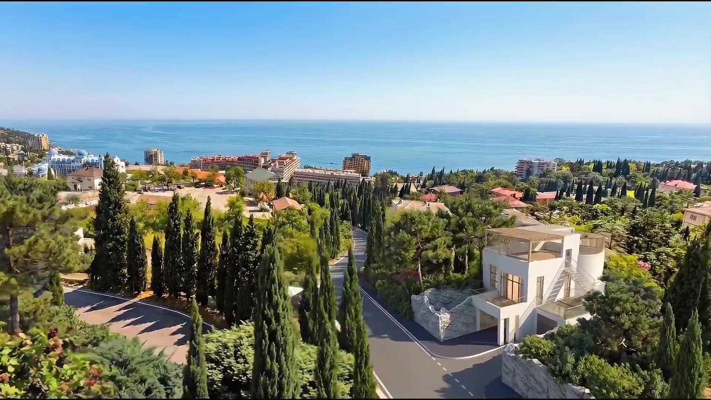
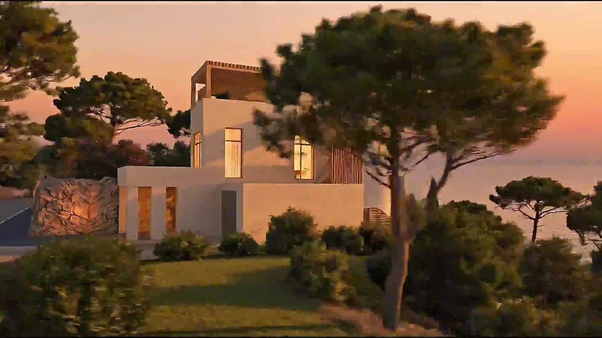
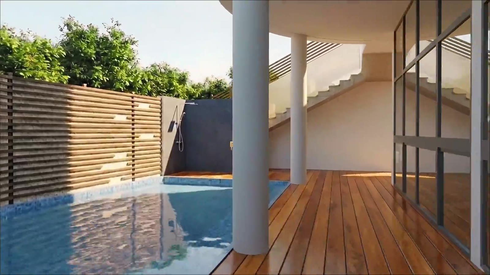
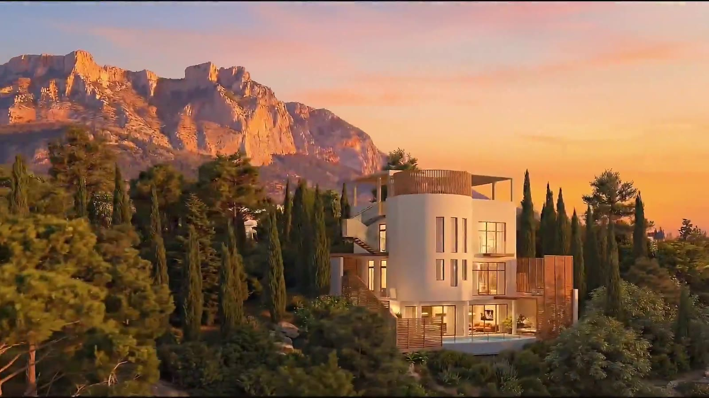
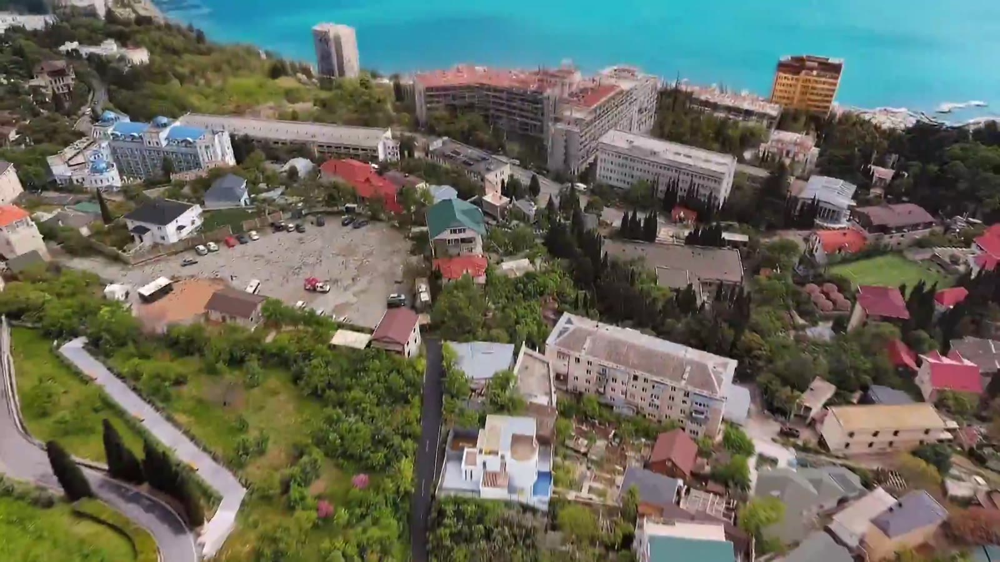

Дом, где живёт ваша семья
Ялта, пгт. Алупка — рядом с Юсуповским дворцом. Вид на море, дворцовый сад и Ай-Петри.
Частный семейный дом у моря
Этот дом задуман не как инвестиционный объект, а как место для жизни одной семьи на несколько поколений — с отдельным этажом для родителей, общей гостиной для всех и двором, где безопасно играть детям.
Три этажа спроектированы по принципу «свой уровень для каждого сценария жизни»: нижний — приезд, гараж и кладовые; средний — общая кухня-гостиная с выходом на террасу и бассейн; верхний — приватные спальни и мастер-спальня в цилиндрической башне с собственным балконом.
Крыша дома — это ещё одна полноценная терраса: деревянная пергола, зона отдыха и вид, который меняется каждый час — от утреннего тумана над садом Юсуповского дворца до вечернего света на скалах Ай-Петри.
Дом стоит в пгт. Алупка, в пешей доступности от Юсуповского дворца и парка, а статус ИЖС даёт официальную регистрацию — то есть это действительно постоянный дом, а не сезонная дача.
Для чего этот дом создан
Каждый уровень и каждая терраса решают свою повседневную задачу — от утреннего кофе с видом на море до вечера всей семьёй у бассейна.
Три вида из окон
Море, сад Юсуповского дворца и хребет Ай-Петри — панорамное остекление цилиндрической башни разворачивает все три вида сразу.
Приватный бассейн
Терраса из массива термодерева с бассейном на уровне гостиной — свой пляж, не выходя за периметр участка.
Кровля-терраса с перголой
Эксплуатируемая крыша с деревянной перголой и зоной отдыха — семейные вечера под открытым небом, отдельно от гостевых зон.
Винтовая лестница
Лестница со стеклянными перилами связывает все этажи и кровлю в единый маршрут — от гаража до террасы под небом.
Деревянные экраны приватности
Реечные ламели вдоль террас дают уединённость от соседей и дороги, не забирая свет и вид на сад дворца.
Отдельный уровень для гаража и кладовых
Нижний этаж закрывает всю техническую часть дома — парковка, хранение и въезд, скрытые от жилых уровней.

Архитектура, обращённая к морю
Скруглённый эркер фасада повторяет линию побережья и разворачивает панораму от гостиной до спальни в башне.
Прокрутите вниз — галерея движется по горизонтали



Пройдите по дому в 3D
Полная виртуальная 3D-прогулка по всем этажам, террасам и бассейну — как личный просмотр, не выходя из дома.
Виртуальный тур «Вилла Мисхор»
Осмотрите гостиную, спальни, бассейн и кровельную террасу в интерактивной 3D-панораме — переключайтесь между этажами и комнатами в своём темпе.
Открыть 3D-тур ↗Планировка по этажам
240 м² основной площади и 540 м² вместе с террасами распределены на три уровня плюс эксплуатируемую кровлю.
Гараж, техническое помещение и кладовые. Отдельный въезд и вход к бассейну и двору — весь хозяйственный контур дома скрыт от жилых уровней.
Общая гостиная-кухня с панорамным остеклением, выход на террасу с бассейном из массива дерева. Сердце дома для всей семьи и гостей.
Спальни с приватными балконами и мастер-спальня в цилиндрической башне — собственный панорамный эркер с видом на море и сад дворца.
Эксплуатируемая терраса с деревянной перголой и зоной отдыха — верхняя точка дома с круговым видом на море, Ай-Петри и парк.
Ялта, пгт. Алупка
Дом стоит рядом с Юсуповским дворцом и его садом — историческим парком у моря, в стороне от туристического потока, но в пешей доступности от набережной и пляжей.
Расстояния приведены ориентировочно, по расположению пгт. Алупка на Южном берегу Крыма.
Посмотрите дом лично или в 3D-туре
Оставьте контакты — мы согласуем удобное время очного показа виллы в Алупке или проведём для вас видео-экскурсию по дому.
Свяжитесь с нами
- Телефон
- +7 (000) 000-00-00
- hello@villa-mishor.ru
- Адрес
- Ялта, пгт. Алупка
Контактные данные — заглушка, замените на реальные перед публикацией сайта.